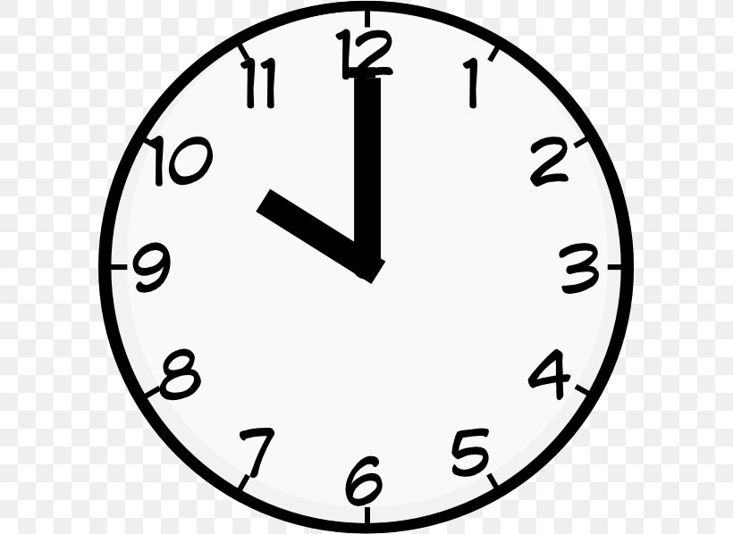

Storyboard - Stopwatch
1
Base State - the app was just opened. The default tab for our
clock is the adult tab. Time is at 0 and all 3 buttons show up
right below it
Adult
Kids
00:00:00.00

2
After the start button is pressed, and a few seconds go by, the
time will look like this.
Adult
Kids
00:00:12.04
3
Now, we have the timer with 12ish seconds. If we press stop and
wait a few seconds, the timer shall not change no longer.
Adult
Kids
00:00:12.04
4
Now we the user will reset the timer by clicking the reset button.
Adult
Kids
00:00:12.04
5
The timer goes back to 0 and does not run until the user presses
start again
Adult
Kids
00:00:00.00
K
The kids' version follows the same pattern for any actions but
with a different image for the clock.
Adult
Kids
00:00:00.00